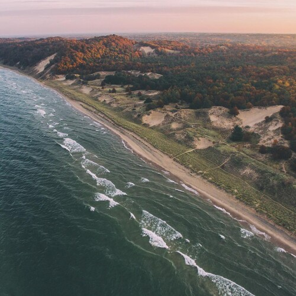

Start With Baby Steps And The Little Trails

Start With Baby Steps And The Little Trails
It won't be as easy,
as a walk in the park.
Because you need an edge,
an Ocean, a Sea, or a Great Lake.
It is best to set off for a body of water,
that has nothing on the horizon.
This is what an edge is,
a starting point.
Ludington State Park is the nearest edge to where I live,
you need to start away from big cities and parking lots.
And you need to dive a little,
it has to be a ride towards wilderness.
An you need options,
the state park allows you to park your car and head towards Nordhouse.
It is always good,
to have a more advanced level near by.
You never know when you change your mind about camping at hike-in sites[1],
and search for something bigger or less Raccoony.
Though always remember, out in the wilderness,
Raccoons are family, and they know how to unzip tents, so bring a little padlock.
Hang your food down from a line attached to a tall branch on a tree,
goodness knows... they need a workout.
For me, in the beginning, a mile long walk to the Jack Pine hike-in sites[2] with my backpack on,
was good, not too long and not too short.
The hike-in sites are away from the entire State Park Kerfuffle,
but they are not too lonely, and have water and rustic restrooms.
Once you hop over the dune,
you see the endless horizon.
And a distant lighthouse, just about a mile north, sells knickknacks,
and M&Ms, and offers a proper bench to sit on.
And if you keep going due north just about another 4.1 miles,
you'll get to the end point of the southern Nordhouse Nurnberg trail[3].
You can actually drive to the Nurnberg Trail Head[4] and there is a neat parking lot there,
again rustic restrooms, a bunch of cars, sometimes you may need to park along the road.
And if you park right before the permit required area,
the parking is free[5], people park there for days though make sure that this is still the case.
It is a mile long walk from the Nurnberg Trail Head parking lot,
to the beach and all the sites, but it is a paradise, and no Raccoons.
Nuremberg is a gravel road, if that is not for you than take the paved West Forest Trail Road[6],
and keep an eye out for that left turn or you will end up in that pretty day camp area.
Once you get to the end of West Forest Trail Road[7],
there is plenty of parking (32 spots), and then you have to walk the Arrow Head Nature Trail south to the Nordhouse boundary.
There is also a very large camping area here for campers,
and cars, where you can camp next to your car, the bathrooms and showers are nice.
This camping area is not a state park, it is privately owned,
it is mostly people in campers just spending their summers in the woods.
Just to clarify, there are two access sites for driving into Nordhouse,
one via the paved West Forest Trail Road, and the other via the Nurnberg gravel road for nature geeks.
And that is a pretty good start of camping adventures,
bring your books and journals, and some books about learning how to draw.
You can start camping in a tent by your car,
at a nice site with a fire place, at the State Park.
Then, you can move on the the Jack Pine hike-in sites,
and then Nordhouse, be it by Nurnberg or West Forest Trail Road.
It may not be perfect to be five or six miles away from your car by foot,
so don't walk to Nordhouse from the State Park, just drive there, at first to Forest Trail Road, and later Nurnberg Road.
Don't forget the gas station[8],
it has chocolates, ice cream, and sausages.
This is a very gentle on-ramp for getting comfortable,
with the woods, and backpacks, and figuring out what you need in your backpack.
Some people do all their hiking here,
they come in a couple of times a year stay a couple of weeks, and regain their strength.
Lake Michigan makes a huge difference,
you are not just camping in the woods, the beach is a minute away.
It takes the endless horizon, in combination with hiking and camping to hear the call of the wild,
once you hear it, you bring it with you wherever you go.
You will never let anybody overwork you again for any reason,
you will gain insight into the world by means of a simple external perspective.
A simple insight goes a long way,
you'll begin seeing what the unimportant or fake things are, like promotions, or grades or GPAs, or diplomas.
If you ever lost touch with your Genius, or Greatness, or even Childhood Dreams,
they are all at the edge of your universe waiting for you to Rest, and Remember.
I'll close with what Henry once wrote,
about his own stay by a lake.
"I went to the woods because I wished to live deliberately,
to front only the essential facts of life, and see if I could not learn what it had to teach,
and not, when I came to die, discover that I had not lived.
I did not wish to live what was not life,
living is so dear;
nor did I wish to practise resignation, unless it was quite necessary.
I wanted to live deep and suck out all the marrow of life,
to live so sturdily and Spartan-like as to put to rout all that was not life,
to cut a broad swath and shave close, to drive life into a corner, and reduce it to its lowest terms..."
Start With Baby Steps And The Little Trails References
[1]: https://goo.gl/maps/vWqnC3NnBSZYWmrGA
[2]: https://www2.dnr.state.mi.us/ParksandTrails/Details.aspx?id=168&type=SPCG
[3]: https://goo.gl/maps/yEjfkpDshPNVegq78
[4]: https://goo.gl/maps/wzXUKQr7AhmTQqQw7
[5]: https://goo.gl/maps/AL1Z2k7ThQ6ajmDD6
[6]: https://goo.gl/maps/uavgj5pSmW396DUJ7
[7]: https://goo.gl/maps/R2M8RbYSftjvgqHx9
[8]: https://goo.gl/maps/GmftgFifmwkzzHKu7